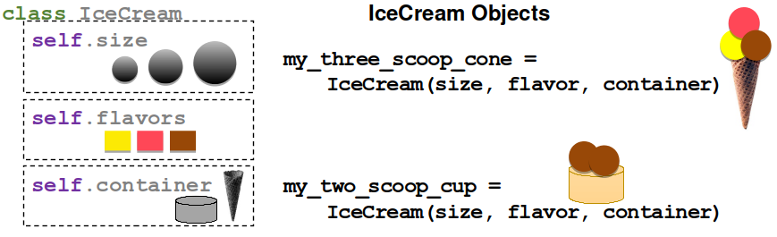

Object Orientation and Classes#
Leverage the power of Python by writing new classes. For interactive reading and executing code blocks  and find b09-classes.ipynb, or install Python and JupyterLab locally.
and find b09-classes.ipynb, or install Python and JupyterLab locally.
Watch this section as a video
Watch this section as a video on the @Hydro-Morphodynamics channel on YouTube.
The Class of Classes#
Python is an inherently object-oriented language and makes the deployment of classes and objects extremely easy. This chapter introduces the concept of Python classes and starts with essential definitions.
What is Object-Oriented Programming (OOP)?#
Object-Oriented Programming (OOP) is a programming paradigm that aligns the architecture of software with reality. Object orientation starts with the design of software, where a structured model is established. The structured model contains information about objects and their abstractions. The development and implementation of object-oriented software require a structured way of thinking and a conceptual understanding of classes, inheritance, polymorphism, and encapsulation.
Objects and Classes#
In computer language, an object is an instance that contains data in the form of fields (called attributes or properties) and code in the form of features (functions or methods). The features of an object enable access (read) and manipulation of its data fields. Objects have a concept of self regarding their attributes, methods, and data fields. self internally references attributes, properties, or methods belonging to an object.
In Python, an object is an instance of a class. Thus, a class represents a blueprint for many similar objects with the same attributes and methods. A class does not use the system memory and only its instance (i.e., objects) will use memory.
The simplest form of a class in Python includes a few fundamental statements only, and it is highly recommended to add an __init__ statement in which class variables are defined. We will come back to the __init__ statement later in the section on magic methods. The following example shows one of the simplest possible class structures with an __init__ method. Note the usage of self in the class, which becomes object_name.attribute for instances of the IceCream class.
class IceCream:
def __init__(self, *args, **kwargs):
self.flavors=["vanilla", "chocolate", "bread"]
def add_flavor(self, flavor):
self.flavors.append(flavor)
def print_flavors(self):
print(", ".join(self.flavors))
# create an instance of IceCream and use the print_flavors method
some_scoops = IceCream()
some_scoops.add_flavor("lemon")
# the following statements have similar effects
some_scoops.print_flavors()
print(some_scoops.flavors)
vanilla, chocolate, bread, lemon
['vanilla', 'chocolate', 'bread', 'lemon']
Inheritance#
The Cambridge Dictionary defines inheritance (biology) as “particular characteristics received from parents through genes”. Similarly, inheritance in OOP describes the hierarchical relationship between classes with is-a-type-of relationships. For instance, a class called Salmon may inherit from a class called Fish. In this case, Fish is the parent class (or super-class) and Salmon is the child class (or sub-class), where Fish might define attributes like preferred_flow_depth or preferred_flow_velocity with fuzzification methods describing other habitat preferences. Such class inheritance could look like this:
# define the parent class Fish
class Fish:
def __init__(self, *args, **kwargs):
self.preferred_flow_depth = float()
self.preferred_flow_velocity = float()
self.species = ""
self.xy_position = tuple()
def print_habitat(self):
print("The species {0} prefers {1}m deep and {2}m/s fast flowing waters.".format(self.species, str(self.preferred_flow_depth), str(self.preferred_flow_velocity)))
def swim_to_position(self, new_position=()):
self.xy_position = new_position
# define the child class Salmon, which inherits (is-a-type-of) from Fish
class Salmon(Fish):
def __init__(self, species, *args, **kwargs):
Fish.__init__(self)
self.family = "salmonidae"
self.species = species
def habitat_function(self, depth, velocity):
self.preferred_flow_depth = depth
self.preferred_flow_velocity = velocity
atlantic_salmon = Salmon("Salmo salar")
atlantic_salmon.habitat_function(depth=0.4, velocity=0.5)
atlantic_salmon.print_habitat()
pacific_salmon = Salmon("Oncorhynchus tshawytscha")
pacific_salmon.habitat_function(depth=0.6, velocity=0.8)
pacific_salmon.print_habitat()
The species Salmo salar prefers 0.4m deep and 0.5m/s fast flowing waters.
The species Oncorhynchus tshawytscha prefers 0.6m deep and 0.8m/s fast flowing waters.
Tip
To make initial attributes of the parent class (Fish) directly accessible, use ParentClass.__init__(self) in the __init__ method of the child class.
Polymorphism#
In computer science, polymorphism refers to the ability to present the same programming interface for different basic structures. Admittedly, a definition cannot be much more abstract. It is sufficient to focus here only on the meaning of polymorphism relevant to Python and that is when child classes have methods of the same name as the parent class. For instance, polymorphism in Python is when we re-define the swim_to_position function of the above-shown Fish parent class in the Salmon child class.
Encapsulation (Public and Non-public Attributes)#
The concept of encapsulation combines data and functions to manipulate data, whereby both (data and functions) are protected against external interference and manipulation. Encapsulation is also the baseline of data hiding in computer science, which segregates design decisions in software regarding objects that are likely to change.
One of the most important aspects of encapsulation is the differentiation between private and public class variables. A private attribute cannot be modified from outside (i.e., it is protected and cannot be changed for an instance of a class). In Python, there are no inherently private variables and this is why the Python documentation talks about non-public attributes (i.e., _single_leading_underscore defs in a class) rather than private attributes. While using a single underscore variable name is rather a good practice without technical support, we can use __double_leading_underscore attributes to emulate private behavior with a mechanism called name mangling. Read more about variable definition styles in the Python style guide. public attributes can be modified externally (i.e., different values can be assigned to public attributes of different instances of a class).
In the above example of the Salmon class, we use a public variable called self.family. However, the family attribute of the Salmon class is an attribute that should not be modifiable. Similar behavior would be desirable for an attribute called self.aggregate_state = "frozen" of the IceCream class. To familiarize with the concept, the following code block defines another child of the Fish class with a non-public __family attribute. The __family attribute is not directly accessible for instances of the new child class called Carp. Still, we want the Carp class to have a family attribute and we want to be able to print its value. This is why we need a special method def family(self), which has the same name as the protected attribute and an @property decorator. The below example features an additional special method called def family(self, value) that is embraced with a @property.setter decorator and that enables re-defining the non-public __family property (even though this is logically nonsense because we do not want to enable renaming the __family property).
What are decorators and wrappers again?
If you are hesitating to answer this question, refresh your memory in the chapter on functions.
class Carp(Fish):
def __init__(self, species, *args, **kwargs):
Fish.__init__(self)
self.__family = "cyprinidae"
self.species = species
@property
def family(self):
return self.__family
@family.setter
def family(self, value):
self.__family = value
print("family set to \'%s\'" % self.__family)
european_carp = Carp("Cyprinus carpio carpio")
print(european_carp.family)
try:
print(european_carp.__family)
except AttributeError:
print("__family is not directly accessible.")
# re-definition of __family through @family.setter method
european_carp.family="lamnidae"
cyprinidae
__family is not directly accessible.
family set to 'lamnidae'
About Carp
Cyprinus carpio carpio is an invasive fish species that it native in Europe but invaded many other rivers around the world. So, we may want to have a deleter function, too…
Decorators#
In the last example, we have seen the implementation of the @property decorator, which tweaks a method into a non-callable attribute (property), and the @attribute.setter decorator to re-define a non-public variable.
Until here, we only know decorators as an efficient way to simplify functions. However, decorators are an even more powerful tool in object-oriented programming of classes, in which decorators can be used to wrap class methods similar to functions. Let’s define another child of the Fish class to explore the @property decorator with its deleter, getter, and setter methods.
class Bullhead(Fish):
def __init__(self, species, *args, **kwargs):
Fish.__init__(self)
self.__family = "cottidae"
self.species = species
self.__length = 7.0
@property
def length(self):
return self.__length
@length.setter
def length(self, value):
try:
self.__length = float(value)
except ValueError:
print("Error: Value is not a real number.")
@length.deleter
def length(self):
del self.__length
european_bullhead = Bullhead("Cottus gobio")
# make use of @property.getter, which directly results from the @property-embraced def length method
print(european_bullhead.length)
# make use of @property.setter method
european_bullhead.length = 6.5
print(european_bullhead.length)
# make use of @property.delete method
del european_bullhead.length
try:
print(european_bullhead.length)
except AttributeError:
print("Error: You cannot print a nonexistent property.")
7.0
6.5
Error: You cannot print a nonexistent property.
About European bullhead
European bullhead belong to the guild of potamodromous fish.
Overloading and Magic Methods#
The above examples introduced a special or magic method called __init__. We have already seen that __init__ is nothing magical itself and there are many more of such predefined methods in Python. Before we get to magic methods, it is important to understand the concept of overloading in Python. Did you already wonder why the same operator can have different effects depending on the data type? For instance, the + operator concatenates strings, but sums up numeric data types:
a_string = "vanilla"
b_string = "cream"
print("+ operator applied to strings: " + str(a_string + b_string))
a_number = 50
b_number = 30
print("+ operator applied to integers: " + str(a_number + b_number))
+ operator applied to strings: vanillacream
+ operator applied to integers: 80
This behavior is called operator (or function) overloading in Python and overloading is possible because of pre-defined names of magic methods in Python. Now, we are ready to dive into the magic methods pool.
Magic methods are one of the key elements that make Python easy and clear to use. Because of their declaration using double underscores (__this_is_magic__), magic methods are also called dunder (double underscore) methods. Magic methods are special methods with fixed names and their magic name is because they do not need to be directly invoked. Behind the scenes, Python constantly uses magic methods, for example, when a new instance of a class is assigned: When you write var = MyClass(), Python automatically calls MyClass’es __init__() and __new__() magic methods. Magic methods also apply to any operator or (augmented) assignment. For example, the + binary operator makes Python look for the magic method __add__. Thus, when we type a + b, and both variables are instances of MyClass, Python will look for the __add__ method of MyClass in order to apply a.__add__(b). If Python cannot find the __add__ method in MyClass, it returns TypeError: unsupported operand.
The following sections list some documented magic methods for use in classes and packages. These are only some of the most common magic methods and more documented magic objects or attributes exist.
Operator (binary) and Assignment Methods#
For any new class that we want to be able to deal with an operator (e.g., to enable summing up objects with result = object1 + object2), we need to implement (overload) the following methods.
Operator |
Method |
Assignment |
Method |
|
|---|---|---|---|---|
|
|
|
|
|
|
|
|
|
|
|
|
|
|
|
|
|
|
|
|
|
|
|
|
|
|
|
|
|
|
|
|
|
|
|
|
|
|
|
|
|
|
|
|
|
|
|
|
|
|
|
|
|
|
|
|
|
|
|
Operator (unary) and Comparator Methods#
Also unary or comparative operators can be defined or overloaded. Unary operators deal with only one input in contrast to the above-listed binary operators. A unary operator is what we typically use to increment or decrement variables with, for example, ++x or --x. In addition, comparative operators (comparators) involve magic methods, such as __ne__, as a synonym for not equal.
Operator |
Method |
Comparator |
Method |
|
|---|---|---|---|---|
|
|
|
|
|
|
|
|
|
|
|
|
|
|
|
|
|
|
|
|
|
|
|
|
|
|
|
|
|
|
|
|
|||
|
|
A comprehensive and inclusive summary of magic methods is provided in the Python docs.
Still, you may wonder how, in practice, does a class look like that is capable of using, for example, the + operator with an __add__ method? To this end, let’s define another child of the Fish class to build a swarm:
class Mackerel(Fish):
def __init__(self, species, *args, **kwargs):
Fish.__init__(self)
self.__family = "scombridae"
self.species = species
self.count = 1
def __add__(self, value):
self.count += value
return self.count
def __mul__(self, multiplier):
self.count *= multiplier
return self.count
atlantic_mackerel = Mackerel("Scomber scombrus")
print(atlantic_mackerel + 1)
print(atlantic_mackerel * 10)
2
20
Mackerel swarms…
Atlantic mackerel belong to the guild of oceanodromous fish.
Custom Python Class Template#
This section features a template for a custom Python3 class. The template can be extended with public and non-public properties, and customizations of magic methods to enable the use of operators such as + or <=. Ultimately, there are many options for writing a custom class, but all custom classes should at least incorporate the following methods:
__init__(self, [...)is the (magic) class initializer, which is called when an instance of the class is created. More precisely, it is called along with the__new__(cls, [...)method, which, in contrast, is rarely used (read more at python.org). The initializer gets the arguments passed with which the object was called. For example, whenvar = MyClass(1, 'vanilla' ), the__init__(self, [...)method receives1and'vanilla'.__call__(self, [...)enables to call a class instance directly. For example,var('cherry')(corresponds tovar.__call__('cherry')) may be used to change from'vanilla'to'cherry'.
Thus, a robust class template skeleton looks like this:
class NewClass:
def __init__(self, *args, **kwargs):
# initialize any class variable here (all self.attributes should be here)
pass
def methods1_n(self, *args, **kwargs):
# place class methods between the __init__ and the __call__ methods
pass
def __call__(self, *args, **kwargs):
# example prints class structure information to console
print("Class Info: <type> = NewClass (%s)" % os.path.dirname(__file__))
print(dir(self))
Understanding the power and structure of classes and object orientation takes time and requires practice. To this end, the chapters on Graphical User Interfaces and Geospatial Python provide more examples of classes to familiarize with the concepts.
Exercise
Familiarize with object orientation in the Sediment transport (1d) exercise.
Learning Success Check-up#
Take the learning success test for this Jupyter notebook.
Unfold QR Code